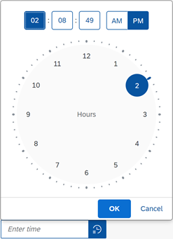

What's New in OpenUI5
1.90
What's New in OpenUI5
1.90
With
this release OpenUI5 is upgraded
from version 1.89 to 1.90.
New
Controls
|
sap.m.NotificationList
The control provides a container for
sap.m.NotificationListGroup and
sap.m.NotificationListItem items where this
control should be used, instead of sap.m.List.
While the sap.m.List is still working properly,
we strongly recommend you to use the new
sap.m.NotificationList control in order to
benefit from the accessibility features that are built-in. For more information, see the API
Reference.
|
Improved
Controls
|
sap.f.IllustratedMessage
(Experimental)
We have implemented two new samples for specific scenarios:
-
The first sample is useful for apps that have user sign
in and use a mechanism for automated sign out as a
result of inactivity over a predefined period of time.
The period of inactivity can vary between 5 to 60
minutes. A session timeout dialog appears automatically
to inform the user. For more information, see the sample.
-
The second sample demonstrates the TNT Illustration Set
where you can preview the illustration types in the
different illustration sizes. For more information, see the sample.
|
|
sap.gantt
Key users can now use the new customization feature to make
changes to the user interface of a Gantt chart as per their
requirements.
For more information, see the API
Reference.
|
|
sap.m.Dialog
The control adopts the setWithinArea feature of
sap.ui.core.Popup. Now, when a custom
within area is set, the dialog is centered inside it, and cannot
be dragged or resized out of this area. For more information, see the API Reference and
the Sample.
|
|
sap.m.IconTabBar
We have introduced a new TabsOverflowMode
property, which defines the overflow behavior of the control.
Now, application developers can choose whether to display the
overflow tabs at the End (default) of the Icon
Tab Bar, or alternatively at StartAndEnd - with
two overflows on both ends of the bar. Usage of the property
with StartAndEnd value is recommended for
scenarios, where the order of the tabs is important; for
example, when the tabs represent process steps. For more information, see the API Reference and
the Sample.
|
sap.m.Input,
sap.m.MultiInputWe have
introduced a new property called
enableTableAutoPopinMode. The property is
responsible for enabling the auto popin mode of the
sap.m.Table when we have an
input
with tabular suggestions. For more information, see the API Reference and
the Samples. |
sap.m.InputBaseWe have
introduced a new association called
ariaDescribedBy. The association is
responsible for referencing the elements that describe the
control. For more information, see the API Reference and
the Sample. |
|
sap.m.TimePicker
We have redesigned the control, and now when you select the
TimePicker icon, a new clock-dial interface appears instead of
sliders. On desktop devices, the behavior of the input field
remains unchanged; but on a mobile device - a new popover with
numeric inputs and a numeric keyboard appears.

For more information, see the API Reference and
the Samples.
|
|
sap.ui.integration.widgets.Card
-
Integration cards now support (in experimental state)
OData batch requests, which are sent using the HTTP POST
method. This enables application developers to describe
such requests in the manifest file, in an extension, or
in a Component card. This feature allows a single HTTP
POST (batch) request to be sent to both OData V2 and V4
services, which improves the performance. For more information, see the Sample and
the Data
Handling section in the Card
Explorer.
-
We have introduced (in experimental state) a new type of
Integration card – the WebPage card. It allows you to
embed an HTML page inside the content of the card. For more information, see the Sample and
the WebPage
Card section in the Card Explorer.
|